I joined Bornbir, an early stage startup, in July 2020 as a product design intern. Throughout the summer and into the fall, I had ownership over several projects, with the most important being the new business-facing product: Provider Portal. The product was shipped and launched on the Bornbir platform on December 13th, 2020.
Introduction
What is Bornbir?
Bornbir is a marketplace platform with the goal of helping new and expecting parents navigate, discover, and engage with trusted healthcare professionals.
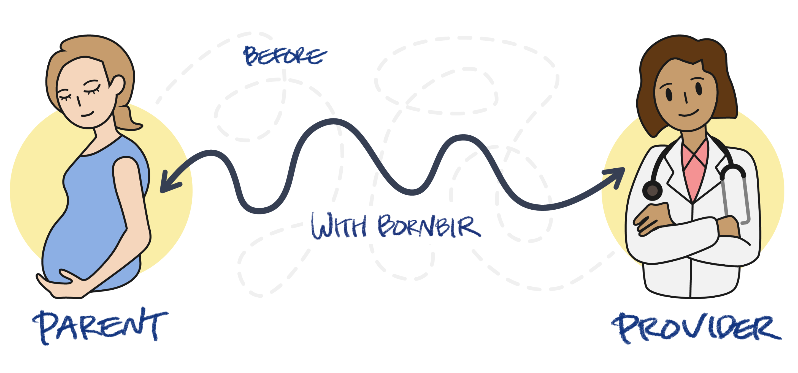
Illustration credits to Miyeon Bae
Defining Key Terms
Providers/Business
The hospital, practice, or larger business entity where the practitioners work
Practitioners
The individual healthcare workers e.g. doctors, midwives, doulas, etc. that work within the provider/business
Services
The healthcare services that the individual practitioners provide e.g. lactation consult, urgent care, birthing suite etc.
What is the Provider Portal?
The Provider Portal serves as the business facing tool for providers to create a Bornbir profile, maintain their information, and engage with potential customers and parents.
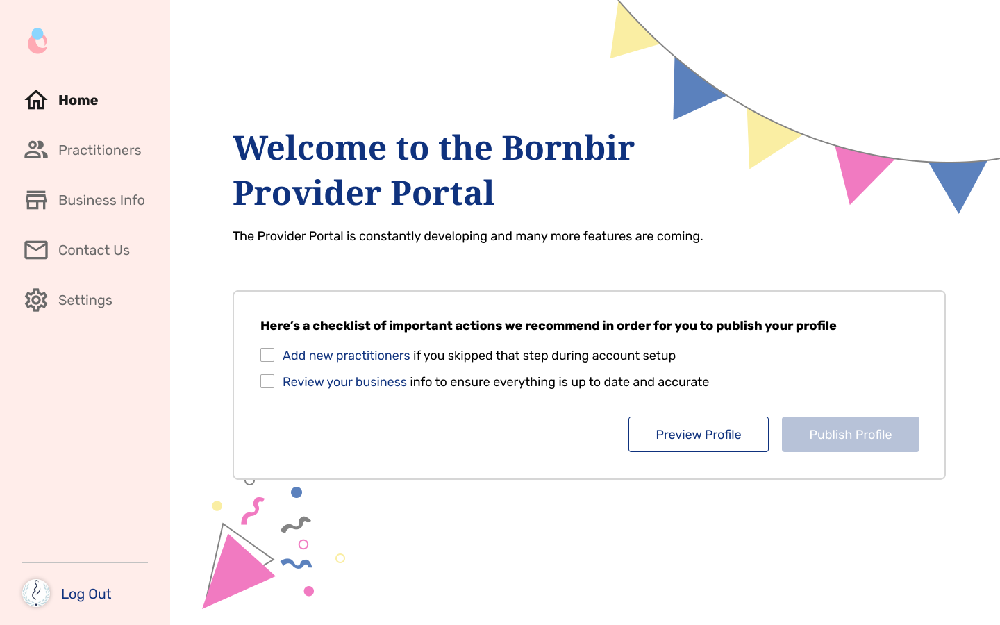
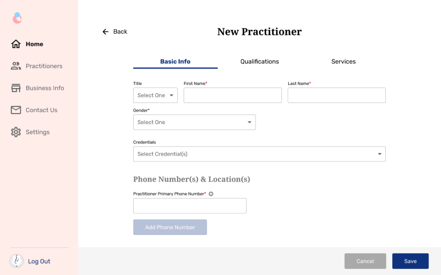
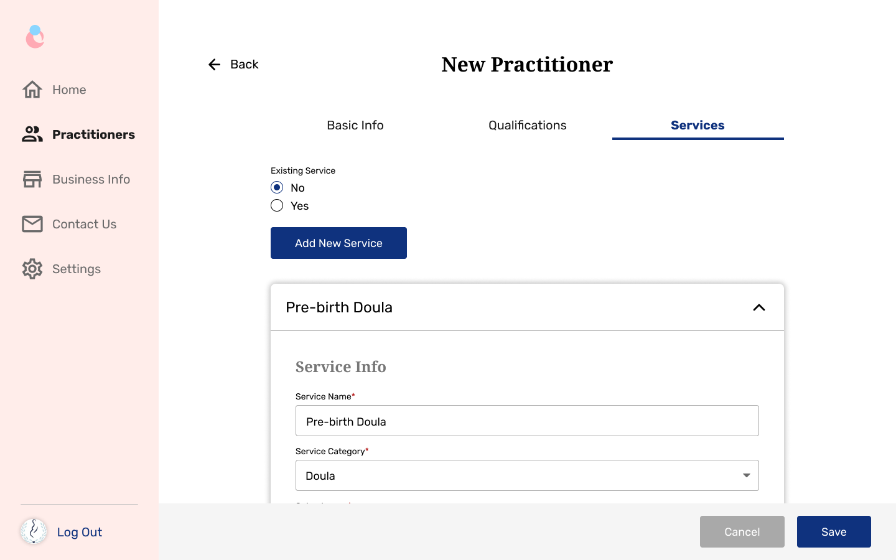
Why is the Provider Portal needed?
The Bornbir platform had features for parents or the consumer side, but there was a lack of features and value being provided to providers or the businesses. As a marketplace platform, it is critical to balance both the consumer and business side. The Provider Portal serves as an important evolution and update to the Bornbir platform.
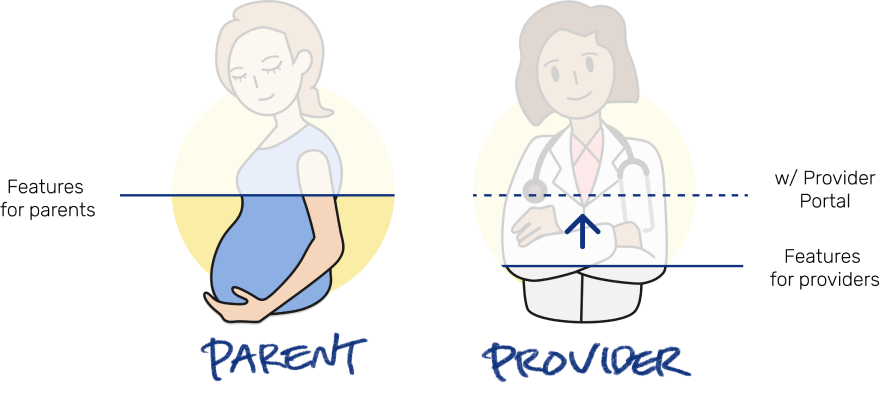
Project Scope
Project Team
Project Manager: Yaguang Zhu
Design Lead: Stella Ding
Product Designer: Andy Cheng
Visual/Graphic Designer: Jess Chen
Frontend Engineers: Morry Kang, Zhaozong Zhu
Backend Engineer: Nankai Pan
Project Timeline & Contribution
In total, the project took about 4 months from initial scoping to launch. As the product designer, I worked on the project for around 2 months. I took complete ownership of the Provider Portal and developed solutions based on a project description and specifications from the project manager.
V1 Features & Value
This project was scoped to be the first version of the Provider Portal. Given that Bornbir is a marketplace platform, this V1 of the portal is the foundation of thebusiness side of Bornbir; our goal was to bring up the capabilities of the 2B side, before continuing on evolving the 2C side.
On V1 Provider Portal, businesses should be able to:
Create or claim a Bornbir provider profile
Update business, practitioner, and service information
These features will:
Ensure data integrity
Reduce overhead for data acquisition
Future Versions & Features
This project created the necessary MVP for the business side of the Bornbir platform. Future features and further evolutions of the Provider Portal had already been planned for the product.
In the near future, providers will be to:
Convert leads from the consumer side of the platform
Manage online classes and content for prospective parents
Engage with parents and other providers
Design Process
Process Breakdown
I broke down the provider portal into 3 manageable parts. I worked from the highest level first, establishing what the overall flow would be, before tunneling deeper into the structure and flow of individual pages, before finally working on individual components.
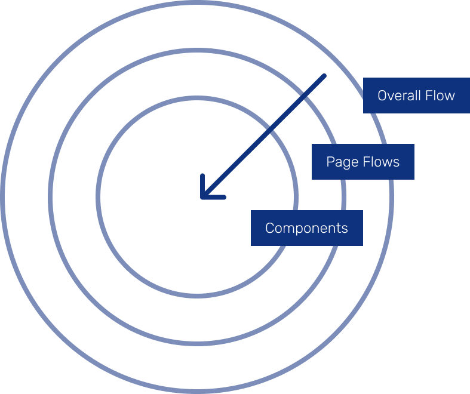
Team Collaboration
Given the small nature of the company and hence teams, I took part in the decision making process at both the design and higher, business levels. Throughout the process, I collaborated with team members across 2 frameworks:
Weekly Product Meetings
Product Manager
Engineers
UX Team
As-Needed UX Meetings
Codesign sessions
Team design critiques
Work check and presentations
Overall Flow & Feedback
During one of the first codesign sessions with the design lead, we had broken down the overall flow of of the product into 3 distinct flows.
The engineers raised questions and feedback about the flow breakdown. They believed the "Onboarding" flow to be redundant with the portal itself and the engineering cost was not justified. Along with reducing costs, another advantage of cutting the flow was that users would introduced to the portal sooner, familiarizing and demonstrating value to them earlier.
Sign Up & Claiming Edge Case Flow
After finalizing the overall flow, I moved a level deeper into page flows, specifically the sign up and claim flow. Bornbir had already gathered data on select providers for the existing consumer platform; the sign up flow would have to account for these already existing profiles and surface the correct flow and action to users.
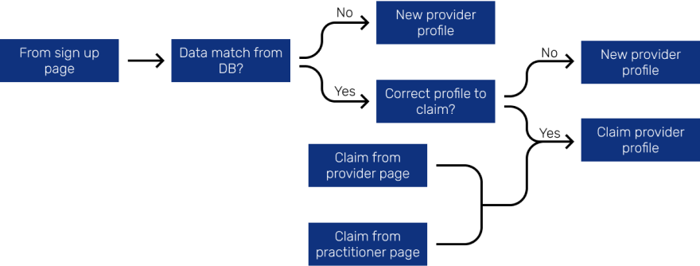
Sign Up & Claiming Exploration
I explored various methods of sign up and quickly narrowed down the options to 2 prototypes. The first (on the left), inspired by winnie.com, a similar service for daycares and childcares, would have users search for the existence of a business profile, The second (on the right) would have users sign up with information first, only redirecting if the data already existed in our database.
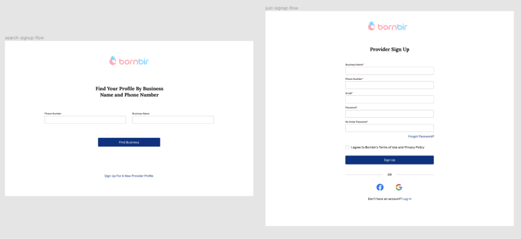
Sign Up & Claiming Solution
The solution was a combination of both explorations. The business name field would be a dynamic search/entry field. If the business name already existed in the database, users would select it from the dropdown and proceed to claim the profile. If the business was new, they would finish the sign up process and create a new profile.
Low Fidelity Portal Explorations
The actual portal was naturally the most extensive part of the design process. I explored a huge amount of possible solutions and worked with not only the design lead, but with the engineers and the PM to validate and narrow down the options. The overarching theme and guiding pillar was to ensure scalability as this version provider portal was the MVP for future features and the foundation of our2B platform.
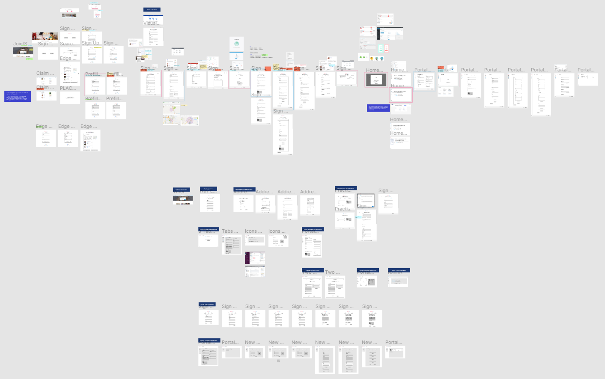
Portal Menu Example
An example that embodies the scalability principle is the navigation menu for the portal. I explored several options before choosing a vertical menu that can seen on other products.
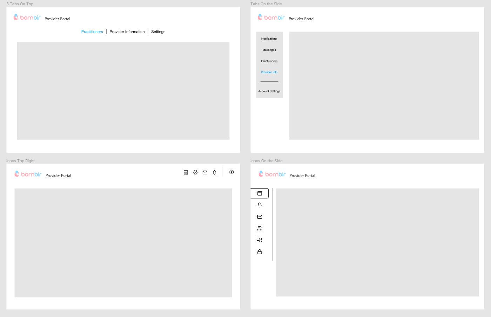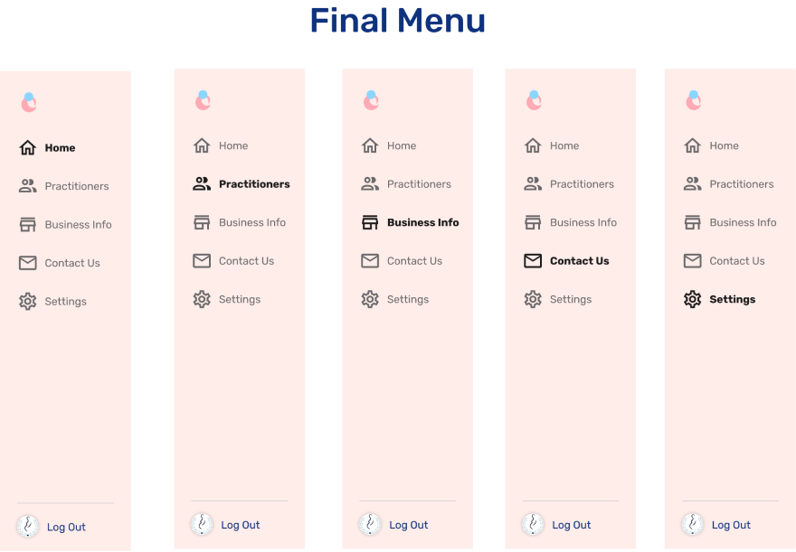
Feedback & Guidance for Components
As the structure and flow of pages was being solidified, I started work on the smaller individual components within the pages. After discussions with engineers and the design lead, 3 realities came to head, driving another key principle not only for components, but as other changes came throughout the portal.
Because we had:
Existing data structures
Small engineering team
Limited time to launch
We needed to:
Reduce design and engineering costs
We could achieve this by:
Drawing inspiration from established systems
Using Material Design & UI components
Using legacy components from an internal data entry tool
Building out new components only when necessary
Design Component Library
While working on the components, I also helped establish the design component library for Bornbir.
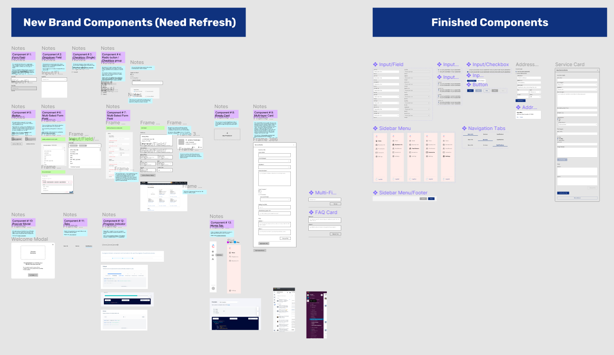
Location Component Example
An example component I designed was for entering in location/address information. Multiple addresses could be entered and at the time, a feature requirement was also for establishing what type of location (specific or general).
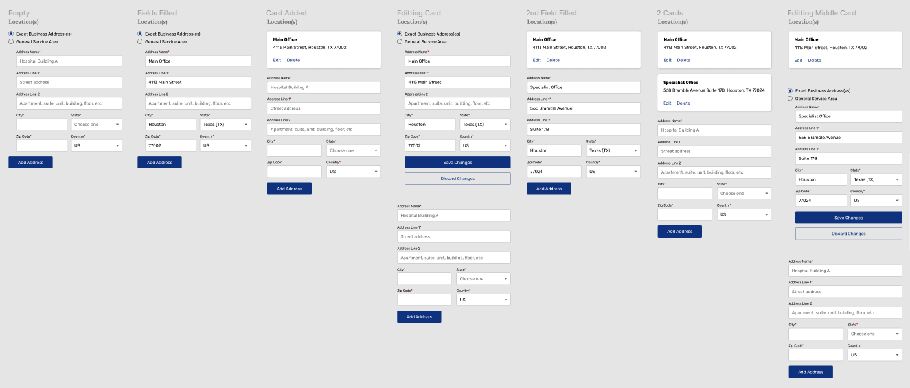
Applying Branding & Visual Detail
After all the component work was done, page flows and structure finalized, and overall flow established, I used branding and visual guidelines provided by the visual/graphic designer to take all my designs into high fidelity.
Final Design
Recap & Future
Project Recap
Goals of Provider Portal V1:
Introduce businesses to new platform
Capture businesses as users
Foundation of 2B side of Bornbir
For 2 months I worked on:
Developing novel interactions and flows
Ideating through low fidelity prototypes
Creating scalable and low-cost flows and design library components
Applying Bornbir branding into high fidelity, shippable screens
Future Plans
I continued to support the development and QA of the provider portal after its release. I additionally helped scope and plan new features for the product, as well as researching and scoping new opportunities and changes for the core, consumer experience.